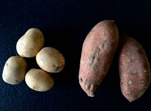

Don't
forget
to eat
all the
colors
of the
Rainbow!
Last
but
not
least:
Potato
and
Sweet Potato

What is the better vor your health?
A baked potato is obviously the better choice
for your health when you compare it to french fries but
Sweet Potatoes are by far the healthier option. They are a good
source of potassium. An increase of an intake of potassium of 1.640 mg per day
reduces the risk of stroke by 21 percent.
The phytonutrients found in the antioxidant pigments
of sweet potatoes can even decrease the risk of depression.